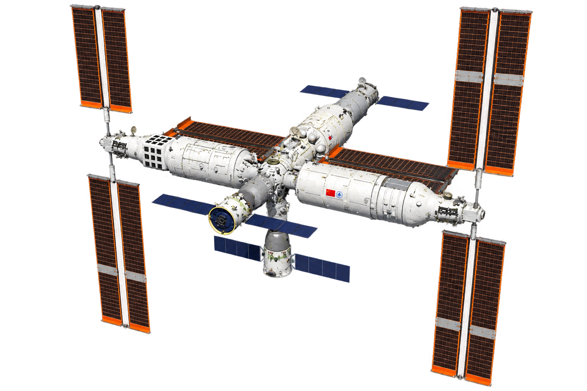
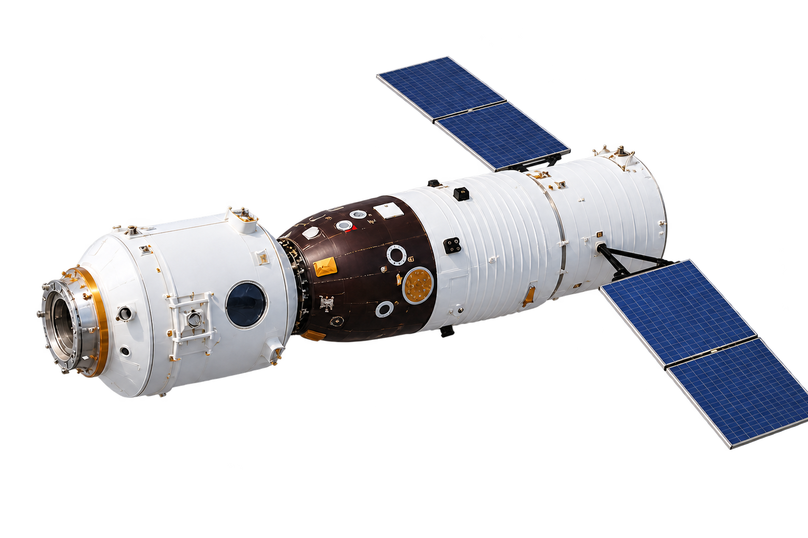
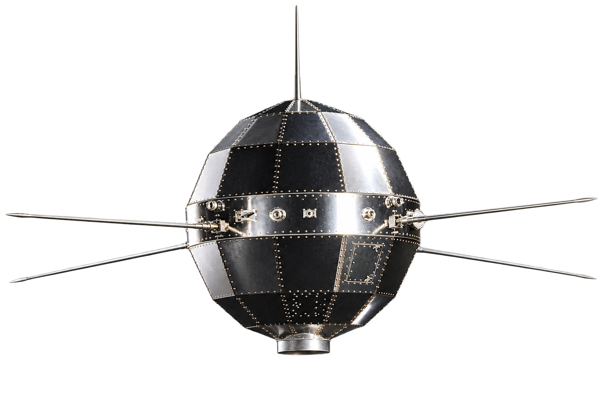
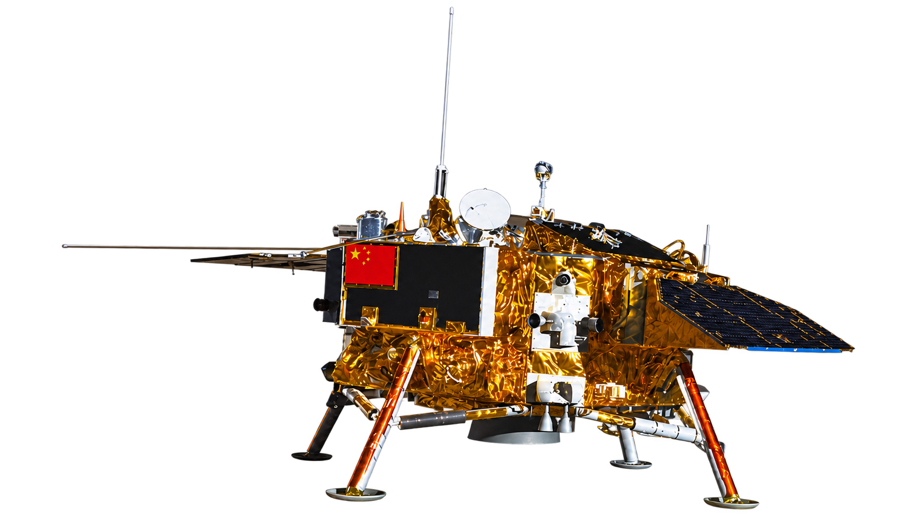

中国航空航天成果沉浸式科普体验
点击进入 · ESC 暂停




中国航空航天成果沉浸式科普体验
点击进入 · ESC 暂停
从仰望星空，到奔赴星辰
正在开启中国航空航天成果沉浸式科普体验
FROM VISION TO VOYAGE
当前航行状态已保存
你已穿越中国航天的十个重要坐标。从东方红一号的乐音到深空的未来航标，星辰大海仍在前方——中国对宇宙的探索，才刚刚开始。
按 ESC 退出确认
本次航行将结束，确定要返回主页吗？
描述内容
意义内容
科普内容